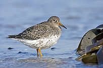
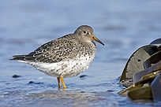

| Purple Sandpiper | |
|---|---|
|  | |
| Conservation status | |
| Binomial name | |
| Calidris maritima Brünnich, 1764 |
|
| Synonyms | |
|
Erolia maritima |
| Purple Sandpiper | |
|---|---|
|  | |
| Conservation status | |
| Binomial name | |
| Calidris maritima Brünnich, 1764 |
|
| Synonyms | |
|
Erolia maritima |
The Purple Sandpiper, Calidris, Arquatella or Erolia maritima is a small shorebird.
Adults have short yellow legs and a medium thin dark bill with a yellow base. The body is dark on top with a slight purplish gloss and mainly white underneath. The breast is smeared with grey and the rump is black.
Their breeding habitat is the northern tundra on Arctic islands in Canada and coastal areas in Greenland and northwestern Europe. They nest on the ground either elevated on rocks or in lower damp location. The males makes several scrapes; the female choose one and lays 3 or 4 eggs. The male takes the major responsibility for incubation and tends the chicks. The young feed themselves.
In Britain, these birds occur in winter in good numbers principally along the east and south coasts, where they favour rocky shorelines adjacent to the sea. It is much rarer as a breeding bird, found only in a localised area of the Cairngorms National Park, where 1-3 pairs have bred since the 1970s. Records of breeding by this species in the UK are monitored and archived by the Rare Breeding Birds Panel.
They are late migrants and move to rocky ice-free Atlantic coasts in winter. most go no further south than North Carolina and northern Portugal. They are fairly gregarious, forming small flocks, often with Ruddy Turnstones. This species is tame and approachable.
These birds forage on rocky coasts, picking up food by sight. They mainly eat insects and mollusks, also some plant material.
The Purple Sandpiper is one of the species to which the Agreement on the Conservation of African-Eurasian Migratory Waterbirds (AEWA) applies.
An apparent case of hybridization between this species and the Dunlin has been reported from England (Millington, 1994).

{kind=link}